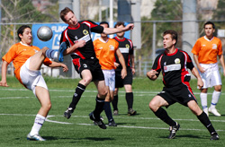

|
Fukuda Denshi, Sunday 26th September
Old habits die hard, but when they do the fresh start that follows can be highly satisfying. Last Sunday, in the shadow of JEF United’s stadium, a rebirth of sorts was taking place. Imperio F.C. newcomers to the TML were up against IFG Pumas, relative newcomers, now into their 2nd season but having little to show for their efforts thus far. With two defeats on the bounce for Pumas a rethink was essential in order to lift them from the foot of the table. New teams may have been on display but it was an old head that masterminded a potential season changing performance.
Manager Sid Lloyd (25 caps as lone striker/98 shots at goal/ 4 goals) finally silenced his critics by opting to play in the role many have speculated suits him best, no he hasn’t signed up as a TML ref! In the absence of regular centre-halves, a bold and courageous decision found Lloyd pulling on the number 6 shirt and producing a first start at the back for the Pumas.
The first half witnessed some crunching tackles, sloppy passing and missed opportunities, welcome to division 3 Imperio! However the match started out as it would continue and end, with a clear dominance both with and without the ball from the boys in black.
Resembling a boxing match, the early exchanges witnessed Pumas softening up Imperio’s mid section but lacking the essential knock out blow. The usual battling from midfield duo Sheard and Warner, along with efforts from Mikhail and Scott, suffocated any of the ‘Samba style’ that Imperio were hoping to unleash.
Apart from an early effort turned onto the bar by Kieran very little troubled the Pumas keeper due to a rock solid defensive stance. Mochan distributed well, Lloyd and Duffy won everything in the air and, until he decided to head the Imperio attacker instead of the ball, Lee Boyd was untroubled at left back.
If it had not been for a notable performance by Daniel of Imperio who would have thrown himself under a bus, Pumas would have been going in at half-time at least a brace in front.
A few personnel changes at half-time witnessed the Pumas upping the tempo, Imperio’s stomach for the game began to dwindled as Sloan, Maurice and Hose pushed forward in numbers. With the battle at the back won it was now in front of the oppositions goal, where all too often Pumas had let themselves down in the past, where the game would be won or lost.
A sweet move down the right wing brought ‘one wonder goal a season’ aka Scott into the action and following a few crisp touches he rocketed the ball into the back of the net reminiscent of the last goal he scored in TML 7. This opened the floodgates and allowed Pumas to play with more confidence. More goals followed with Hose and Sei getting on the score sheet for the first time in their Pumas careers, hopefully many more will follow.
Pumas saw out the remainder of the match, witnessing their first clean sheet in over a 6 games. Imperio demonstrated individual skill but in order to progress in the TML they are going to need to gel as a unit, something Pumas are slowly but surely starting to do.
Man of the match – Sid Lloyd.
Report by A much relieved Puma (TS).
|